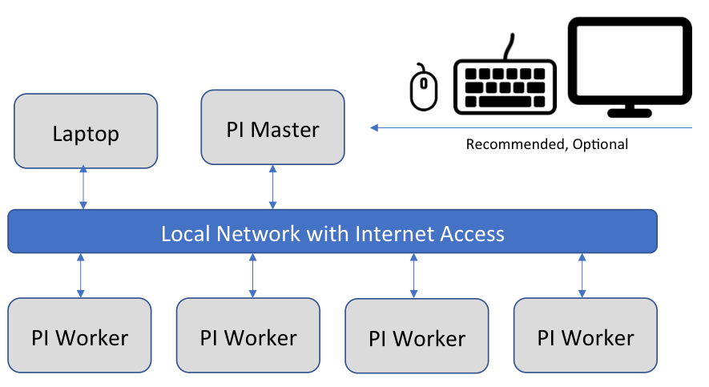
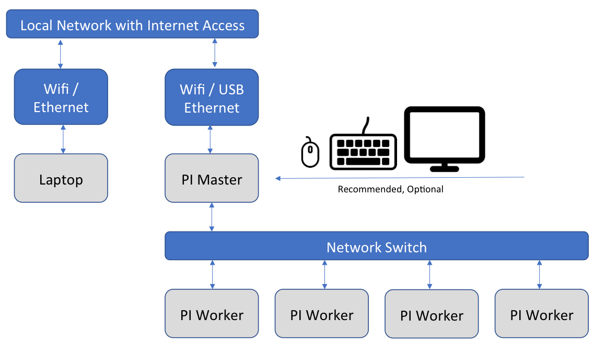

Network of Pis (NOW)
The purpose of setting up a cluster of Raspberry Pi computers is to be able to experiment with different server and cluster technologies on a small scale. To this end we want to be able to use a network configuration that mirrors a large scale cloud configuration. This section will explain how to setup several Raspberry Pis in a cluster configuration to run experiments on them.
Network of Pis Configurations
There are several possible configurations for a network of Pis. One possibility
is to connect each of the Pis to your local network so that you can
directly connect to each of the Pis in the cluster from your laptop. This
option can be easy to setup but it may have problems scaling up to several
hundred Raspberry Pis. The second option is to use one of the Pi computers as a
master or router and for the other Pis in the cluster to access the Internet
through this master Pi’s connection. Note that in most situations each Pi will
need to be able to access the Internet to download packages and interact with
public services. In the second option, however, the worker Pis will be separated
from the main network by the master Pi and it may not be possible to directly
access them, for example, over ssh from your laptop.
In the first option we can directly connect each Raspberry Pi to your local network using either the Ethernet adapter on the Pi or using the Wireless adapter on the Pi. If using the Ethernet adapter and intermediary router or switch can also be used to connect the Pis to the local network. The network can be visualized in @fig:pi-cluster-network-direct. To setup this kind of cluster please follow the instructions in Direct Network Cluster.
{#fig:pi-cluster-network-direct}
In the second option we will need to configure the master Pi to have two network interfaces enabled. One of the interfaces will connect to the local network and have direct internet access and will accessible to the other computers on the network. The second interface will be attached to the private network that the worker Pis are connected to and will serve as the DHCP server and router for that private network. Since the Raspberry Pi comes with an Ethernet adapter and a wireless network adapter, you can use the built-in Ethernet adapter on all of the Pis to connect to a switch and form a private network this way. The master Pi can then connect to your local network using its wireless adapter. Another possibility is to use a USB Ethernet adapter (purchased from this list of Raspberry Pi compatible USB Ethernet adapters) on the master Pi so that it can have a stable, wired connection to both networks. In either case the network setup is illustrated in @fig:pi-cluster-network-private. The steps to setup this kind of private network cluster can be found in Private Network Cluster.
{#fig:pi-cluster-network-private}
Network of Pis Hostnames
When setting up a cluster of Pis it is necessary to assign a hostname to each Pi
in the cluster. These names are important because they must not be repeated
across Pi clusters and they must not conflict with other devices on the same
network. If you are setting up a small network, almost any hostname will be
fine, but for larger networks you should come up with a naming scheme to avoid
conflicts. For a small cluster you may pick a designation such as a color or
name and then assign a number to each Pi. For example, if you have three Pis you
could call them red01, red02, and red03.
For a large cluster we recommend giving each cluster a unique id, for example, a
number from 1 to 100, and then giving each node in the cluster an id that is
based on the cluster that it is assigned to. For example, if each cluster is
named clusterNN where NN is a zero-padded number from 01 to 99 then we
would have clusters named cluster01, cluster02, …, cluster11, etc. The
cluster name will not be assigned to any particular Pi. Each Pi will be given a
name that is based on the cluster it is assigned to. If each of your clusters
are made of 5 Pis then you can number your individual Pis with the following
formula:
node number = (cluster number - 1) * 5 + pi number in cluster
Our cluster01 cluster would then have the Pis node001 to node005 and
cluster02 would have the Pis node006 to node010. Our cluster11 would
have nodes node051 to node055. We assume the lowest numbered node in each
cluster is the master node. If you have more than 999 Pis or clusters with more
than 5 Pis per cluster then you will have to adjust the naming scheme
accordingly.
Pi Cluster Preparation
To prepare to setup a Pi cluster you will need to choose whether you will be
setting up each Raspberry Pi by hand or by using the tools and scripts that we
have developed to make this task easier and less error prone. The primary tool
that will save time in setting up a Pi cluster is
cm-burn which was
introduced in the section Burn an SD Card with cm-burn.
The installation and setup instructions for cm-burn can be found in the
cm-burn README.md.
Once you have cm-burn successfully installed you can use the instructions here
to setup your cluster. We have also developed some scripts to help setup a Pi
cluster in the
cloudmesh-community/pi
project. These scripts can be copied to the Pi after it is running to help
complete various setup tasks easily. Use of these scripts will be covered in the
following sections.
If you choose not to use cm-burn or to use our scripts we will provide the
manual setup steps for you to complete. In most cases the manual steps are the
exact same as the operations the scripts perform, so you can also check the
manual steps if you are curious about what the scripts are doing. Before
beginning the manual steps shown next, we assume you are able to burn an image to an
SD card, to login to the Pi, and to complete the locale and hostname setup at a
minimum. If you have not completed these steps, please see the following
sections for details:
We also recommend using ssh keys to connect to your Raspberry Pis rather than using password authentication. Please see the SSH keygen section for details on generating a key on your laptop.
Any other required steps will be explained in the following sections.
Direct Network Cluster Setup
An overview of this cluster setup is included in the Network of Pis Configurations section. To complete this setup you will need to select a set of hostnames for the PIs in your cluster. Please see the Network of Pis Hostnames section for our recommendation on setting hostnames. Since each Pi in the cluster will directly connect to the local network each Pi will have the same network setup. This makes using this option easier for initial setup and experimentation with a cluster of Pis. You will need to choose whether the Pis will connect to your network through a wired Ethernet connection or through a WiFi connection. In either case you can choose to statically assign an IP address or to let each Pi get a dynamic IP address using DHCP. Using DHCP may be easier at first but it can also be a problem if you do not have a monitor connected to the Pi because you then will not know in advance the IP address that is assigned to each Pi. Please see the section Discover Pi DHCP Network Addresses for details on how to find the IP address of a device assigned by DHCP.
Direct Network Cluster Setup with cm-burn
The cm-burn tool directly supports setting up a cluster of Pis with direct
access to your local network. You can choose to use Ethernet or wireless to
connect and you can statically assign IP addresses or use DHCP. We will give
examples of each use case. First, ensure that cm-burn is installed following
the directions at Burn an SD Card with cm-burn. We will
assume that you have five Pis to setup with the names red01 to red05 and the IP
addresses 192.168.1.101 to 192.168.1.105 for static IPs and that your domains
submask is 255.255.255.0. Please substitute the actual values of your local
network here. We further assume that you have setup an ssh key so that you can
login to the Pi without specifying a password. Please see the
SSH keygen section for details. If you do not have an ssh key
then you can leave the --key setting out of cm-burn and skip the manual
sections relating to ssh keys.
Static IP Ethernet Setup
Static Ethernet setup is one of the easiest options with cm-burn. This command
will burn 5 SD cards with the hostnames red01 to red05 in the 192.168.1.1
domain with IPs 192.168.1.101 to 192.168.1.105. It will copy the public ssh key
from your computer onto each of the Pis and disable password logins. After each
card is burned it can be removed and put into a Pi and booted. The Pi will
appear on your network in about one minute after booting.
$ cm-burn create --name red[01-05] \
--ips 192.168.1.[101-105] --domain 192.168.1.1 \
--key ~/.ssh/id_rsa.pub \
--image 2018-11-13-raspbian-stretch-lite.img
You should now be able to connect to the Pi over ssh:
$ ssh pi@192.168.1.101
If you would like to connect to the Pi using the hostname then you will need to
setup the hosts on your host OS. On macOS and Linux this can be done by editing
the /etc/hosts file and adding a line at the end for each of the Pis. The
format is to start with the IP address, then have whitespace (blank spaces or
tabs) and then the hostname. The file should look like this:
...
192.168.1.101 red00
192.168.1.102 red01
192.168.1.103 red02
192.168.1.104 red03
192.168.1.105 red04
Static IP WiFi Setup
Setting up static IP addresses over Wifi is very similar to doing it over
Ethernet. The only difference is when you burn the SD card with cm-burn you will
need to specify the wireless access point’s ssid and passphrase on the command.
You can use the output of wpa_passphrase as the --psk-hash parameter or you
can specify the actual passphrase for the wireless network in plain text using
the --psk parameter. We strongly recommend using the hashed passphrase for
some added security. For more details on the wireless setup please see the
Wireless Network at Home section.
Using the psk hash:
$ cm-burn create --name red[01-05] \
--ips 192.168.1.[101-105] --domain 192.168.1.1 \
--ssid home_network --psk-hash 0617cac0a00f87d23cda5705f5ff97bbc562f5d1907b40f02c39912a7d595b0f \
--key ~/.ssh/id_rsa.pub \
--image 2018-11-13-raspbian-stretch-lite.img
Using the actual wireless passphrase:
$ cm-burn create --name red[01-05] \
--ips 192.168.1.[101-105] --domain 192.168.1.1 \
--ssid home_network --psk "my passphrase has spaces" \
--key ~/.ssh/id_rsa.pub \
--image 2018-11-13-raspbian-stretch-lite.img
For other details on connecting to the Pis please see the Static IP Ethernet Setup section.
DHCP Ethernet Setup
To use DHCP over Ethernet the only change from static setup is to remove the setting of the IP addresses and the domain. Since you do not specify an IP address, cm-burn will not change the standard setup of the Pi which is to find an address using DHCP.
$ cm-burn create --name red[01-05] \
--key ~/.ssh/id_rsa.pub \
--image 2018-11-13-raspbian-stretch-lite.img
When the SD cards are finished you can put them into the Pi and they should boot and join the local network over DHCP in a minute or two. To find the address assigned to the Pi see the section Discover Pi DHCP Network Addresses.
DHCP Wifi Setup
The DHCP Wifi Setup is only different from the static IP setup in that the static IP addresses are removed from the cm-burn command. See the Static IP WiFi Setup for more details on setting the wireless ssid and psk.
Using the psk hash:
$ cm-burn create --name red[01-05] \
--ssid home_network --psk-hash 0617cac0a00f87d23cda5705f5ff97bbc562f5d1907b40f02c39912a7d595b0f \
--key ~/.ssh/id_rsa.pub \
--image 2018-11-13-raspbian-stretch-lite.img
Using the actual wireless passphrase:
$ cm-burn create --name red[01-05] \
--ssid home_network --psk "my passphrase has spaces" \
--key ~/.ssh/id_rsa.pub \
--image 2018-11-13-raspbian-stretch-lite.img
Direct Network Cluster Setup by hand
To setup networking on a Pi cluster by hand you can follow these steps depending on your needs. If you want to setup DHCP over Ethernet you do not need to do anything. The Pi will automatically connect to DHCP over Ethernet when it is connected to a network.
To setup static IP addresses for Ethernet or wireless connections you need to
edit the /etc/dhcpcd.conf file and add the following lines, substituting the
desired IP address and address of your local router:
...
interface eth0
static ip_address=192.168.1.101/24
static routers=192.168.1.1
static domain_name_servers=192.168.1.1
interface wlan0
static ip_address=192.168.1.101/24
static routers=192.168.1.1
static domain_name_servers=192.168.1.1
The instructions for connecting a Pi to the WiFi network can be found in the Wireless Network at Home section.
Private Network Cluster Setup
An overview the design of a private Pi cluster is included in the Network of Pis Configurations section. To complete this setup you will need to select a set of hostnames for the PIs in your cluster. Please see the Network of Pis Hostnames section for our recommendation on setting hostnames.
Private Network Cluster Setup with cm-burn :o2:
:o2:
Cm-burn does not currently support setting up the master node in a private network cluster. When it is enhanced to support this we will add the documentation here.
To setup the worker nodes in a cluster you can simply decide whether you are using static IP addresses or DHCP IP addresses and then use the appropriate section about setting up a direct network. For static IPs instead of using the domain of your local network you should use the domain of the private Pi network. Also, you should generate an ssh key on the master Pi and use it when setting up the worker Pis so that you can connect to them securely from the master.
Private Network Cluster Setup by hand
The master node of the cluster must use one network device to talk to the local
network and another network device to talk to the other Pis on the private
network. For these steps we will assume that wlan0 is on the local network and
that eth0 is on the private Pi network. These could be switched or replaced
with a USB Ethernet connection with no change to the steps. We assume for these
steps that you have already connected wlan0 to your local network and these
steps will then complete setting up eth0 as the bridge device to the private
Pi network.
We need the dnsmasq service as a simple DNS server and the convenience package
iptables-persistent for making changes to iptables:
$ apt-get update
$ apt-get install -qy dnsmasq iptables-persistent
To setup our wlan0 as the favored interface for the Pi to communicate over
the Internet we need to set its metric lower than the eth0 interface. Normally
the Pi will prefer to use the eth0 interface since it is usually faster. This
change can be made in /etc/dhcpcd.conf. This file also where we setup static
IP addresses. If you are not using a static IP address for wlan0 then you
will not have the lines beneath interface wlan0 to set the static IP address.
We will setup our private Pi network to have the IP address range 192.168.50.1
to 192.168.50.255 which means it is 192.168.50.1/24 or, equivalently, uses the
255.255.255.0 subnet mask. You can freely change this and you must choose a
network that does not match the local network. Change /etc/dhcpcd.conf to
match this:
interface eth0
metric 300
static ip_address=192.168.50.1/24
static routers=192.168.50.1
static domain_name_servers=192.168.50.1
interface wlan0
metric 200
static ip_address=192.168.1.107/24
static routers=192.168.1.1
static domain_name_servers=192.168.1.1
Next you need to update /etc/dnsmasq.conf to include the following lines to
enable giving out DHCP addresses on the eth0 network and to give out addresses
in the proper range:
interface=eth0
dhcp-range=eth0, 192.168.50.2,192.168.50.250,24h
We then need to enable NAT Forwarding by uncommenting (or adding) the following
line in /etc/sysctl.conf:
net.ipv4.ip_forward=1
The final step is to setup and save our iptables configuration to do the actual forwarding of packets. Run these commands to set this up properly:
$ sudo iptables -t nat -A POSTROUTING -o eth0 -j MASQUERADE
$ sudo iptables -A FORWARD -i eth0 -o wlan0 -j ACCEPT
$ sudo iptables -A FORWARD -i wlan0 -o eth0 -j ACCEPT
$ sudo iptables-save | sudo tee /etc/iptables/rules.v4
At this point you can restart the services and everything should be working:
$ sudo service dhcpcd restart
$ sudo service dnsmasq restart
To find out what IP address has been assigned to each Pi you can use the
Discover Pi DHCP Network Addresses section or you
can manually look in the /var/lib/misc/dnsmasq.leases which will list each
lease and the MAC Address of the device it is leased to.
Discover Pi DHCP Network Addresses
If you setup your Pis using DHCP on your local network then you may not know the IP address that has been dynamically assigned to each Pi. If you have statically assigned IP addresses to each Pi then you will need to make node of these assignments and add the hostname mapping to each device that needs to be aware of the hostnames.
If you have physical access to each Pi and a compatible monitor and keyboard
then you can login to each of them in sequence and then run ifconfig to
determine which IP address has been assigned to each of them. If you have access
to the DHCP server that assigns IP address (for example, in your home network)
you can also usually access that device through a web browser to find out which
IP address has been assigned to each device on the network. If you have properly
configured the hostname on each Pi then it should be registered with that name
on your DHCP server.
It is not trivial to detect all of the devices on a local network. In addition, if you use static networking then the devices will typically not register or report their hostnames. However, if you are using DHCP and you have properly configured the hostname on each Pi, then the following method should work.
To begin you need the nmap tool installed on your system. It can be installed
on Linux (on a Pi, for example) using the standard package installation tools
such as sudo apt-get install nmap. If you are using Windows or macOS, please
see the Nmap installation instructions or
use Homebrew on macOS as brew install nmap.
To find the Pis you must be on the same network as they are. If you are using the Direct Network Cluster setup then the Pis will all be on the same network as your laptop. If you are using the Private Network Cluster setup then only the master Pi will be on your local network. If you want to discover the IP address of the Pis on the private network then you should first login to the master Pi node and then execute the following commands.
This works on a Pi substitute your network address range for 192.168.1.0/24.
The first command nmap -sn will search your local network IP address range
for any devices attached to the network. This process is to find out which
devices are reachable from the host. As a result of the nmap process, the
host’s ARP table
will be updated with a record of every device (up to the arp cache size limit
but this is probably larger than you will need) on the local network. You can
then use the arp -a command to list the devices that were found. arp will
show all devices on any network reachable from this computer, so if you are
running this on the master Pi then it will show devices on both the local
network and the private Pi network. You can filter the arp results by hostname
or IP address range if you would like using grep. Note: if you see a lot of
results from arp listed as (incomplete) that is OK it means there is
probably not a device at that IP address but the OS is still waiting for a
response. Every OS has a different timeout for responses and any incomplete
entries should eventually disappear.
# optional: if you want to you can clear the arp cache first
$ sudo arp -a -d
# Search for devices on the local network
$ nmap -sn 192.168.1.0/24
# will list devices in arp cache and lookup hostname
$ arp -a
# only show results with hostnames starting with "red"
$ arp -a | grep '^red'
# only show results with IP addresses on the specified network
$ arp -a | grep '192.168.1.'
In the following example output from arp -a, the entry for blue02 is a
Raspberry Pi set to DHCP. The entry for cred is my laptop. The entry listed
first with the IP 10.0.0.103 is a Pi set to a static IP address and the
10.0.0.17 is another device on my network. Even though arp lists the fully
qualified domain name, you can directly access a host with just the first part
of the name as long as you are also on the same local network (which you must be
or nmap and arp would not list the address).
? (10.0.0.103) at b8:43:eb:6e:cf:b7 [ether] on wlan0
? (10.0.0.17) at 10:29:92:53:9e:1b [ether] on wlan0
cred.hsd1.in.comcast.net (10.0.0.90) at e0:f8:8e:2d:34:79 [ether] on wlan0
blue02.hsd1.in.comcast.net (10.0.0.21) at b8:27:b3:73:8d:a3 [ether] on wlan0
If you are trying to determine whether your DHCP server contains an entry for a
particular device you can use the dig tool to determine this. dig is not
installed by default on a Pi but can be installed with
sudo apt-get install dnsutils and you can lookup a host on any nameserver or
you can specify your local router with the @ symbol:
# lookup red01 on all nameservers
$ dig red01
# lookup red01 on the local router DNS
$ dig red01 @192.168.1.1
If dig is successful you should see something like this:
;; ANSWER SECTION:
red01. 0 IN A 192.168.1.43
SSH keygen
An ssh key is a secure means to verify your identity to another computer. Ssh keys can be used to login to a remote computer without needing a password. This enhances security because an attacker cannot attempt to crack the password. However, the private keys that are stored on the client computer are a potential weakness and must be carefully protected to ensure that they are not compromised. If you would like more information on SSH keys the GitHub SSH guide is highly recommended.
To generate a new ssh key on macOS or Linux use the ssh-keygen program. The
same procedure can be followed on Windows by using Git Bash. It will save your
key by default in your home folder in ~/.ssh/id_rsa and the public key in
~/.ssh/id_rsa.pub. It is more secure if you supply a passphrase. If you do
supply a passphrase then it must be entered any time you want to use the key. If
you do not supply a passphrase then the private key can be used by anyone and if
someone has a copy of it they can impersonate you and gain access to any
computer that you have access to.
$ ssh-keygen
There is also a command to copy your ssh public key to other computers if you have password access to them already. This can be useful to do when setting up the private Pi cluster.
$ ssh-copy-id <hostname>
Configure Cluster SSH
This was moved from the Kubernetes section.
Install Dependencies:
$ apt-get install -qy clusterssh
For hostnames rp1-4 (final node names will be: rp0, rp1, rp2, rp3, rp4).
To update Cluster SSH configuration, add the following to /etc/clusters:
$ rpcluster rp1 rp2 rp3 rp4
Now you can run commands to all clusters by:
$ cssh rpcluster
Parallel Shell
TODO
Cloudmesh Parallel
TODO
Other Parallel Execution
TODO
- https://www.rittmanmead.com/blog/2014/12/linux-cluster-sysadmin-parallel-command-execution-with-pdsh/
- https://www.linux.com/news/parallel-ssh-execution-and-single-shell-control-them-all
- https://www.tecmint.com/using-dsh-distributed-shell-to-run-linux-commands-across-multiple-machines/
- https://github.com/vallard/psh
- https://github.com/karrick/psh/blob/master/psh